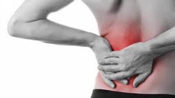

Nyeri punggung bawah adalah salah satu keluhan muskuloskeletal yang paling umum, mempengaruhi hampir 80% orang dewasa di beberapa titik dalam hidup mereka. Artikel ini akan membahas 5 latihan sederhana yang bisa Anda lakukan di rumah untuk meredakan nyeri dan meningkatkan fleksibilitas.
1. Penyebab Umum Nyeri Punggung Bawah
Sebelum memulai latihan, penting untuk memahami penyebab nyeri punggung bawah. Beberapa penyebab umum meliputi:
- Postur tubuh yang buruk saat duduk atau berdiri
- Otot inti yang lemah yang tidak cukup mendukung tulang belakang
- Herniasi diskus atau masalah struktural lainnya
- Stres dan ketegangan otot
- Kurangnya aktivitas fisik dan fleksibilitas
Catatan Penting: Jika nyeri Anda disertai dengan mati rasa, kelemahan kaki, atau gangguan kandung kemih/usus, segera konsultasikan dengan profesional medis.
2. Persiapan Sebelum Melakukan Latihan
Agar latihan efektif dan aman, ikuti persiapan berikut:
Konsultasi Awal
Jika Anda memiliki kondisi medis tertentu, konsultasikan terlebih dahulu dengan dokter atau fisioterapis.
Pemanasan
Lakukan pemanasan ringan selama 5-10 menit (berjalan di tempat, peregangan ringan).
Peralatan
Siapkan matras yoga atau handuk sebagai alas. Pakailah pakaian yang nyaman dan tidak membatasi gerakan.
3. 5 Latihan Sederhana yang Efektif
Berikut adalah 5 latihan yang bisa Anda lakukan setiap hari:
Cat-Camel Stretch (Peregangan Kucing-Sapi)
Cara Melakukan:
- Mulai dengan posisi merangkak (tangan dan lutut)
- Tarik napas, turunkan perut ke bawah, angkat kepala (posisi sapi)
- Hembuskan napas, lengkungkan punggung ke atas, tarik dagu ke dada (posisi kucing)
- Ulangi 10-15 kali dengan gerakan perlahan
Knee-to-Chest Stretch
Cara Melakukan:
- Berbaring telentang dengan lutut ditekuk
- Peluk satu lutut dan tarik ke arah dada
- Tahan selama 20-30 detik, rasakan regangan di punggung bawah
- Ulangi dengan kaki sebelahnya, lalu kedua kaki bersamaan
Pelvic Tilts
Cara Melakukan:
- Berbaring telentang dengan lutut ditekuk, telapak kaki di lantai
- Kencangkan otot perut, tekan punggung bawah ke lantai
- Tahan 5 detik, kemudian rileks
- Ulangi 10-15 kali dengan gerakan terkontrol
Bird-Dog Exercise
Cara Melakukan:
- Mulai dengan posisi merangkak
- Angkat lengan kanan dan kaki kiri secara bersamaan hingga sejajar dengan tubuh
- Tahan 3-5 detik, pertahankan punggung lurus
- Ulangi dengan sisi sebaliknya, lakukan 8-10 repetisi per sisi
Child's Pose (Pose Anak)
Cara Melakukan:
- Dari posisi merangkak, duduk kembali ke tumit
- Bungkukkan badan ke depan, rentangkan tangan di depan
- Turunkan dahi ke matras, tahan 30-60 detik
- Bernapas dalam dan rileks
4. Tips Tambahan untuk Mencegah Nyeri
Posisi Tidur yang Tepat
Tidur miring dengan bantal di antara lutut atau telentang dengan bantal di bawah lutut.
Ergonomi Kantor
Pastikan kursi menyangga punggung bawah, monitor setinggi mata, dan istirahat setiap 30 menit.
Aktivitas Rutin
Berjalan kaki 30 menit sehari dapat memperkuat otot dan meningkatkan fleksibilitas.
Latihan Inti
Latihan seperti plank dan bridge dapat menguatkan otot inti yang mendukung punggung.
5. Kapan Harus Konsultasi ke Fisioterapis
Meskipun latihan ini dapat membantu meredakan nyeri ringan hingga sedang, ada saatnya Anda memerlukan bantuan profesional:
Nyeri yang Tidak Membaik
Jika nyeri tidak membaik setelah 2 minggu melakukan latihan secara konsisten.
Gejala Neurologis
Jika mengalami mati rasa, kesemutan, atau kelemahan di kaki.
Nyeri Setelah Cedera
Jika nyeri muncul setelah jatuh, kecelakaan, atau cedera traumatis.
Penting: Fisioterapis dapat melakukan assessment menyeluruh, mendiagnosis penyebab nyeri, dan membuat program terapi yang personal sesuai kebutuhan Anda.
Nyeri punggung bawah dapat dikelola dengan latihan yang tepat dan konsisten. Kelima latihan di atas dapat membantu meredakan nyeri dan mencegah kekambuhan. Ingatlah untuk mendengarkan tubuh Anda - jika suatu gerakan menimbulkan nyeri yang tajam, hentikan dan konsultasikan dengan profesional.